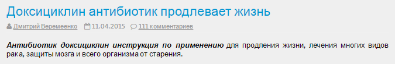
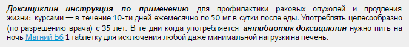
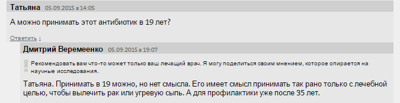
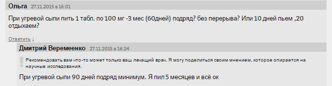
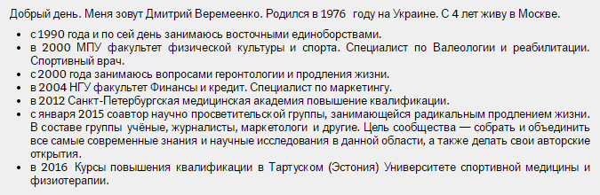
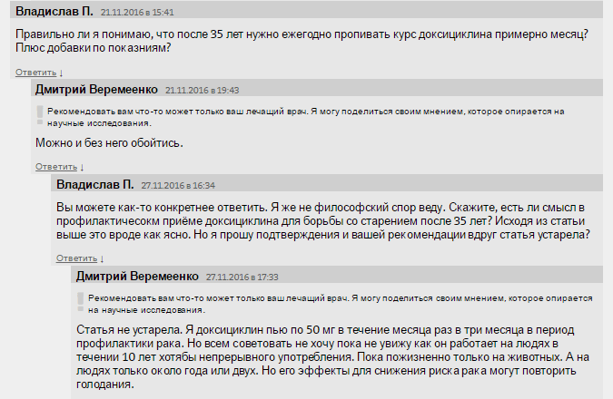

На просторах Рунета существует большое число сайтов, дающих читателю неадекватную информацию об антибиотиках. Как правило, препараты представляются в неприглядном виде, их нежелательные явления как истинные, так и незаслуженно приписанные, активно выставляются напоказ. Разумеется, опытный пользователь может найти адекватный сайт, где всё написано про антибиотики именно так, как есть. Не всем препаратам пока уделено должное внимание, но о доксициклине уже рассказано достойно.
На просторах Рунета существует большое число сайтов, дающих читателю неадекватную информацию об антибиотиках. Как правило, препараты представляются в неприглядном виде, их нежелательные явления как истинные, так и незаслуженно приписанные, активно выставляются напоказ. В то время как разумные советы — вовремя обратиться к врачу, не заниматься самолечением, ограничить доступ к антибиотикам — оказываются спрятанными за антибиотикофобией. Разумеется, опытный пользователь может найти адекватный сайт, где всё написано про антибиотики именно так, как есть. Не всем препаратам пока уделено должное внимание, но о доксициклине уже рассказано достойно.

Автор публикаций по тематике борьбы со старением честно указывает, что материал статьи не может быть использован для самолечения. Однако пытливый ум интернет-пользователя подозревает, что для лечения не себя, а других пациентов информация всёантибиотикиже может оказаться полезной. Сайт наполнен многочисленными ссылками на Pubmed как доказательство таких утверждений как:
- Антибиотик доксициклин вызывает самоуничтожение раковой опухоли поджелудочной железы.
- Антибиотик доксициклин подавляет распространение метастазов рака груди и простаты в костную ткань.
- Антибиотик доксициклин вызывает самоуничтожение раковой опухоли простаты.
- Антибиотик доксициклин защищает мозг от старения и предупреждает болезнь Паркинсона.
- Антибиотик доксициклин защищает мозг от инсульта.
- Антибиотик доксициклин замедляет старение тимуса.
- Антибиотик доксициклин замедляет процесс старения всего организма, подавляя общее воспаление, которое возрастает с возрастом и является одной из причин развития всех возрастозависимых заболеваний и общего одряхления организма с возрастом.
Почти все ссылки действительно направляют читателя на абстракты статей на английском языке 1996-2015 гг., в которых обычно говорится об экспериментальных работах на животных в контексте некоторых специальных вопросов. Автор раз за разом подчёркивает, что «Статья носит ознакомительный характер и не может являться самоучителем по продлению жизни. Препараты у некоторых людей могут оказывать побочные эффекты, которые также нужно учитывать. Использовать препараты можно только по назначению врача».
Но интрига сохраняется и, получив дозу доказательности, хочется узнать, не предлагает ли автор всем жить вечно? Наконец-то далее начинаются конкретные рекомендации.

Вполне конкретные и, главное, легко воспроизводимые рецепты долголетия есть почти на каждой странице сайта. Автор активно общается с читателем отвечая на комментарии к статье (>100 шт.), приоткрывая потихоньку одному ему известную тайну доксициклина.

В 19 лет рановато ещё помышлять о профилактике преждевременной смерти. Однако пользователи попались разборчивые. Девушки не хотят бессмертия с доксициклином, если оно не ассоциировано с красотой. Зачем быть вечно молодым с прыщами?

Немного удивляет, что курс доксициклина для лечения прыщей дольше, чем курс профилактики старости. Медицина, продлевающая жизнь, полна сюрпризов. Отдельные адепты хотят также жить долго и счастливо и без набора других патологий, накопленных за предшествующую бездоксициклиновую жизнь.
Предлагаю Вам поучаствовать в беседе: http://nestarenie.ru/doksiciklin-antibiotik-prodlevaet-zhizn.html. Сайт живой, последнее сообщение совсем недавно. Или Вас не интересует «как продлевать жизнь?»
Значительно больше Вы почерпнёте на страничке с Программами омоложения (>3,5 тыс. комментариев). Здесь представлено 13 программ, вnbsp;которых включены витамины, минералы, сахароснижающие и противовоспалительные препараты, гормоны, статины, лечебное питание. Всё дифференцировано по полу, возрасту и даже по индексу массы тела. Готовые решения о том, как принимать 5-6 лекарственных препаратов без назначения врача не по показаниям длительными курсами во имя омоложения отдельных частей тела или всей тушки целиком.
Судя по комментариям, многие люди не просто выполняют рекомендации (которых как бы и нет), а внимательно анализируют схемы лечения и меняют тактику борьбы за долголетие в зависимости от изменений на сайте.
Материалы сайта перемежаются со ссылками на известных отечественных учёных, вполне вразумительными советами по здоровому образу жизни и подробностями спортивной карьеры создателя блога. Автор открыт к дискуссии, ему можно написать в Твиттер, посмотреть видеолекции и т.п. Он искренне пытается продлить жизнь пациентов и имеет соответствующее образование.

Автор и сам, разумеется, желая нам лучшей доли, ставит эксперименты на себе.

Сколько ещё посетителей сайта принимают доксициклин месяцами на протяжении ряда лет? Сколько из них платят за рекомендации «профессионалов» по борьбе со старением? По ссылке http://nestarenie.ru/26.html вы можете увидеть 57 человек (данные на конец ноября), оплативших участие в семинаре, и имена всех учёных (?), вовлечённых в работу не только над ролью доксициклина в профилактике рака и старости, но и множества других лекарственных средств.
Так что, уважаемые коллеги, пока вы оптимизируете антимикробную терапию и осторожничаете с выводами, более активные представители вашего вида работают на благо всего Доксициклиновечества. Дополняя результаты экспериментальных исследований горсткой препаратов и брокколи, вы бы могли давным-давно уже жить долгую жизнь и не иметь прыщей. И в тот день, когда кто-то молодой и красивый получит Нобелевскую премию за «радикальное» продление жизни с помощью, например, доксициклина, вам останется только идти в аптеку и надеяться, что антибиотики всё так же будут отпускаться без рецепта врача.